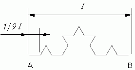
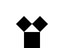

Czym są fraktale?
Fraktal w znaczeniu potocznym oznacza zwykle obiekt samopodobny albo "nieskończenie subtelny" (ukazujący subtelne detale nawet w wielokrotnym powiększeniu).
Nie istnieje jedna precyzyjna definicja fraktali. W zamian wymienia się cechy obiektów fraktalnych, najważniejsze z nich to:
- Nietrywialna struktura w każdej skali,
- Samo-podobieństwo, jeśli nie w sensie dokładnym, to przybliżonym,
- Naturalny „poszarpany”, „kłębiasty” wygląd,
- jego wymiar Hausdorffa jest większy niż jego wymiar topologiczny,
- struktura ta nie daje się łatwo opisać w języku tradycyjnej geometrii euklidesowej.

(zbiór Mandelbrota)
Omówienie wybranych cech fraktali
Samo-podobieństwo
Najprostsze fraktale są konstruowane przez iterację. Na przykład, zacznij od wypełnionego trójkąta i powtarzaj ten proces: Dla każdego wypełnionego trójkąta połącz punkty środkowe boków i usuń środkowy trójkąt. Powtarzanie tego procesu w nieskończoność daje w rezultacie Trójkąt Sierpińskiego.
Trójkąt jest samo-podobny. Oznacza to, że składa się z mniejszych kopii samej siebie.
Możemy opisać ten trójkąt jako złożony z trzech kopii, każda ½ wysokości i ½ szerokości oryginału. Zwróć jednak uwagę na konsekwencję samopodobieństwa: każda z tych kopii składa się z trzech jeszcze mniejszych kopii, więc możemy powiedzieć, że trójkąt składa się z dziewięciu kopii, każda ¼ na ¼ oryginału, lub 27 kopii każda ⅛ przez ⅛ lub ...
Niecałkowity wymiar fraktalny
Niecalkowity wymiar fraktalny to pojęcie odnoszące się do wymiaru Hausdorffa fraktala, który nie jest liczbą całkowitą. Wymiar Hausdorffa opisuje sposób, w jaki zbiór wypełnia przestrzeń. Dla regularnych obiektów geometrycznych, takich jak linia, kwadrat czy sześcian, wymiar Hausdorffa jest liczbą całkowitą równą 1, 2 i 3 odpowiednio. Jednak dla fraktali wymiar Hausdorffa może być liczbą niecałkowitą. Na przykład dla dywanu Sierpińskiego wymiar Hausdorffa wynosi około 1.8928. Niecalkowity wymiar fraktalny odzwierciedla fakt, że fraktale są bardziej skomplikowane niż regularne obiekty geometryczne i mają nietrywialną strukturę na różnych skalach.
Rys historyczny
Pojęcie fraktala zostało wprowadzone do matematyki przezBenoît_Mandelbrot_(1924-2010)_był_francusko-amerykańskim_matematykiem
pochodzenia_polsko-żydowskiego.
Zajmował_się_szerokim_zakresem_problemów_matematycznych,_ale_jest
najbardziej_znany_jako_twórca_geometrii
fraktalnej._Opisał_zbiór_Mandelbrota_i_wymyślił samo słowo “fraktal”.
Georg_Cantor_(1845-1918)_był_niemieckim_matematykiem,_pionierem_teorii_mnogości_._Wprowadził_ogólne_pojęcie_mocy_zbioru,_udowodnił_nieprzeliczalność_zbioru_liczb_rzeczywistych_przez_rozumowanie_przekątniowe_i_wykazał_ogólniejsze_twierdzenie_Cantora.
Najpopularniejsze przykłady fraktali
Zbiór Cantora
Zbiór Cantora to podzbiór prostej rzeczywistej opisany w 1883 roku przez niemieckiego matematyka
Georg_Cantor_(1845-1918)_był_niemieckim_matematykiem,_pionierem_teorii_mnogości_._Wprowadził_ogólne_pojęcie_mocy_zbioru,_udowodnił_nieprzeliczalność_zbioru_liczb_rzeczywistych_przez_rozumowanie_przekątniowe_i_wykazał_ogólniejsze_twierdzenie_Cantora.
Trójkąt Sierpińskiego
Trójkąt Sierpińskiego jest jednym z najprostszych fraktali. Konstrukcja tego zbioru została podana przez polskiego matematykaWacław_Sierpiński_(1882-1969)_był_polskim_matematykiem,_jednym_z_czołowych_przedstawicieli_i_twórców_warszawskiej_szkoły_matematycznej_oraz_wieloletnim_profesorem_Uniwersytetu_Warszawskiego_i_przewodniczącym_rady_naukowej_Instytutu_Matematycznego_Polskiej_Akademii_Nauk._Zajmował_się_teorią_liczb,_analizą_matematyczną_i_podstawami_matematyki_–_teorią_mnogości,_topologią_mnogościową_oraz_teorią_kategorii.
Tworzy się go w następujący sposób:
- Narysuj trójkąt równoboczny.
- Podziel każdy bok trójkąta na trzy równe części.
- Usuń środkowy odcinek każdego boku trójkąta.
- Narysuj trójkąty, łącząc końce pozostałych odcinków.
- Proces ten należy powtarzać dla każdego z powstałych mniejszych trójkątów, aż do uzyskania pożądanej ilości iteracji.
Trójkąt Sierpińskiego
Krzywa Kocha
Krzywa Kocha to krzywa fraktalna, którą można zdefiniować jako atraktor IFS lub jako granicę ciągu krzywych. Jest nieskończenie długa, ale mieści się na skończonej powierzchni, więc można narysować jej przybliżenie. Została po raz pierwszy opisana w 1904 roku przezHelge_von_Koch_(1870-1924)_był_szwedzkim_matematykiem,_znanym_z_odkrycia_krzywej_Kocha._Była_to_jedna_z_pierwszych_i_najbardziej_znanych_krzywych_fraktalnych._Napisał_wiele_prac_na_temat_teorii_liczb_i_zajmował_się_hipotezą_Riemanna.
Jak stworzyć Krzywą Kocha?
Krok 0- Krzywa Kocha w kroku zerowym (k = 0) jest odcinkiem. Zostanie on podzielony na 3 równe części, a środkową zastąpią dwa odcinki długości ⅓l nachylone względem niej pod kątem 60°.
- Krzywa Kocha w kroku pierwszym (k = 1)po transformacji zawiera 4 odcinki, każdy równy ⅓l. W kolejnym kroku każdy z tych odcinków ponownie zostanie podzielony na 3 części, a środkową znów zastąpimy dwoma odcinkami.
- Krzywa Kocha w kroku drugim (k = 2) zawiera już 16 odcinków, każdy długości ⅑l. W kolejnym kroku (k = 3) powstanie 64 odcinków, każdy długości ⅟₂₇ itd.

Krzywa Kocha

Krok 0

Krok 1
Krok 2
Płatek Kocha
Płatek Kocha jest jednym z najwcześniejszych fraktali, które zostały opisane. Opiera się na krzywej Kocha, powstaje poprzez połączenie ze sobą 3 Krzywych Kocha.


płatek Kocha
Funkcja Weierstrassa
Funkcja Weierstrassa to pierwszy opublikowany przykład rzeczywistej funkcji ciągłej, która jest nieróżniczkowalna w żadnym punkcie. Została odkryta przezJest określona wzorem:
gdzie a jest pewną liczbą z przedziału (0,1) natomiast b jest liczbą nieparzystą, spełniającą warunek ab> 1 + 3⁄2π.

Funkcja Weierstrassa
Zbiór Mandelbrota
Zbiór Mandelbrota to podzbiór płaszczyzny zespolonej, którego brzeg jest jednym z najbardziej znanych fraktali, „najsłynniejszym obiektem współczesnej matematyki”.Nazwa tego obiektu pochodzi od jego odkrywcy, matematykaBenoît_Mandelbrot_(1924-2010)_był_francusko-amerykańskim_matematykiem
pochodzenia_polsko-żydowskiego.
Zajmował_się_szerokim_zakresem_problemów_matematycznych,_ale_jest
najbardziej_znany_jako_twórca_geometrii
fraktalnej._Opisał_zbiór_Mandelbrota_i_wymyślił samo słowo “fraktal”.
Zbiór tworzą te punkty  dla których ciąg zdefiniowany równaniem rekurencyjnym:
dla których ciąg zdefiniowany równaniem rekurencyjnym:
Przydatne pojęcia:
- Jednostka urojona - liczba, która po podniesieniu do kwadratu daje wartość rzeczywistą ujemną.
i² = -1 - Liczba zespolona to pojęcie z matematyki, które obejmuje liczby złożone z części rzeczywistej i urojonej. Zapisuje ją się w postaci a + bi, gdzie a i b są liczbami rzeczywistymi, a i to jednostka urojona spełniająca równanie i^2 = -1.
Liczbę zespoloną z=(a,b) można zapisać w postaci kanonicznej:
z = a + bi,
gdzie:
a = część rzeczywista,
b = część urojona.

Zbiór Mandelbrota na płaszczyźnie zespolonej
Zbiór Mandelbrota

Płaszczyzna zespolona
Zbiór Julii
Zbiór Julii to fraktal będący podzbiorem płaszczyzny zespolonej. Został odkryty przez francuskiego matematykaGaston_Maurice_Julia_(1893_-_1978)_był_francuskim_matematykiem_z_Algierii,_który_opracował_formułę_dla_zbioru_Julii._Jego_prace_zostały_spopularyzowane_przez_francuskiego_matematyka_Benoita_Mandelbrota;_fraktale_Julii_i_Mandelbrota_są_ze_sobą_ściśle_powiązane.
Zbiór tworzą te punkty dla których ciąg opisany równaniem rekurencyjnym:


Zbiór Julii
Drzewo Pitagorasa
Drzewo Pitagorasa – fraktal zbudowany z kwadratów na płaszczyźnie, swym kształtem przypominający drzewo. Nazwany został od imienia greckiego matematyka i myśliciela Pitagorasa, gdyż na każdym etapie konstrukcji wymaga rysowania dwóch kwadratów opartych na odpowiednich bokach trójkąta prostokątnego, których własności stanowią ilustrację twierdzenia Pitagorasa
Jak stworzyć Drzewo Pitagorasa?
Krok 1- Narysuj dowolny kwadrat na płaszczyźnie.
Krok 2
- Dorysuj do niego trójkąt prostokątny, w którym przeciwprostokątna jest górną krawędzią tego kwadratu.
Krok 3
- Na przyprostokątnych trójkąta buduj kolejne kwadraty.
Krok 4
- Powtarzaj powyższe operacje dla każdego z powstałych kwadratów, aż do osiągnięcia pożądanej liczby poziomów lub dopóki nie zostanie osiągnięta pewna granica.

Drzewo Pitagorasa

Krok 1
Krok 2

Krok 3

Krok 4
Dywan Sierpińskiego
Dywan Sierpińskiego – fraktal otrzymany z kwadratu za pomocą podzielenia go na dziewięć (3x3) mniejszych kwadratów, usunięcia środkowego kwadratu i ponownego rekurencyjnego zastosowania tej samej procedury do każdego z pozostałych ośmiu kwadratów. Nazwa pochodzi od nazwiskaWacław_Sierpiński_(1882-1969)_był_polskim_matematykiem,_jednym_z_czołowych_przedstawicieli_i_twórców_warszawskiej_szkoły_matematycznej_oraz_wieloletnim_profesorem_Uniwersytetu_Warszawskiego_i_przewodniczącym_rady_naukowej_Instytutu_Matematycznego_Polskiej_Akademii_Nauk._Zajmował_się_teorią_liczb,_analizą_matematyczną_i_podstawami_matematyki_–_teorią_mnogości,_topologią_mnogościową_oraz_teorią_kategorii.
Dywan Sierpińskiego
Smok Heighwaya
Smok Heighwaya to jeden z najbardziej znanych fraktali, który powstaje poprzez ciągłe składanie i obracanie prostokąta o 90 stopni. Ten proces jest powtarzany wiele razy, a każde kolejne powtórzenie prowadzi do uzyskania bardziej skomplikowanego kształtu przypominającego smoka. Smok Heighwaya został odkryty przez Johna Heighwaya, Bruce’a Banksa i Williama Hartera z NASA w latach 60. XX wieku, a jego nazwa pochodzi od nazwiska jednego z jego odkrywców.

Smok Heighwaya
Kostka Mengera
Kostka Mengera to fraktal, który powstaje poprzez ciągłe dzielenie sześcianu na mniejsze sześciany i usuwanie ich środkowych części. Ten proces jest powtarzany wiele razy, a każde kolejne powtórzenie prowadzi do uzyskania bardziej skomplikowanego kształtu przypominającego gąbkę. Kostka Mengera została odkryta przez austriackiego matematykaKarl_Menger_(1902-1985)_był_austriacko-amerykańskim_matematykiem,_synem_ekonomisty_Carla_Mengera._W_matematyce_Menger_badał_teorię_algebry_i_teorię_wymiaru_krzywych_i_obszarów_o_niskiej_regularności(„szorstkich”);_w_teorii_grafów_przypisuje_mu_się_twierdzenie_Mengera.Jego_najbardziej_znanym_wkładem_dla_szerokiej_publiczności_była_kostka_Mengera.

Kostka Mengera
Fraktale wokół nas
Fraktale generowane komputerowo

Electricsheep-21194

Electricsheep-21158

Apophysis

Electricsheep-21158

Sterling2
Fraktale w naturze
Fraktale to struktury o niekończącej się złożoności, które można znaleźć w wielu miejscach w przyrodzie. Przykłady fraktali w przyrodzie to drzewa, chmury, płatki śniegu, brokuły, kalafior, fiordy, linia brzegowa czy naczynia krwionośne.

Kalafior Brassica oleracea
Roślina występująca we Włoszech.
Galaktyki

Chmury

Fiordy
Fiordy Sognefjorden i HardangerfjordenFormacje skalne

Aloes wielkolistny

Kryształy lodu
Metody tworzenia fraktali
Najprostszą metodą tworzenia fraktali jest wykorzystanie zbioru przekształceń afinicznych będących przekształceniami zwężającymi (kontrakcjami). Transformując dowolny, niepusty zbiór S, zgodnie z regułą (tworząc ciąg zbiorów):

W granicy otrzymujemy:
atraktor układu, który w szczególności może być fraktalem. Zbiór nazywamy w tym przypadku systemem przekształceń iterowanych ( IFS ), zaś otrzymany w powyższej granicy fraktal jest atraktorem tego systemu. Jego istnienie wynika z twierdzenia Banacha o punkcie stałym odwzorowania zwężającego. W ten sposób można wygenerować m.in. następujące fraktale: zbiór Cantora , krzywa Kocha , smok Heighwaya , trójkąt Sierpińskiego , kostka Mengera , paproć Barnsleya .
W praktyce aby wygenerować fraktal wybieramy dowolny punkt x i transformujemy go kilka razy za każdym razem losując odpowiednio przekształcenie :

Procedurę tę powtarzamy np. kilka tysięcy razy. W szczególnych przypadkach dla efektu wizualnego może być istotny sposób losowania przekształceń.
Np. dlaPaproć_Barnsleya_to_fraktal_znany_ze_względu_na_uderzające_podobieństwo_do_liści_paproci_występujących_w_naturze._Został_spopularyzowany_przez_Michaela_F._Barnsleya._Jest_to_przykład_złożonego_obiektu,który_może_być_opisany_za_pomocą_zaledwie_czterech_przekształceń_afinicznych_jako_atraktor_systemu_funkcji_zwężających_IFS.
Zastosowania geometrii fraktalnej
Kompresja danych
Kompresja fraktalna to system kompresji stratnej opierający się na wykorzystaniu fraktali do reprezentacji danych. Używany jest prawie wyłącznie do kompresji obrazów. Najpopularniejszym zestawem fraktali są systemy funkcji iterowanych (IFS). Kompresja fraktalna daje dobre wyniki zarówno przy bardzo wysokim stopniu kompresji (czyli niskiej jakości) jak i wtedy gdy chcemy zachować wysoką jakość, jednak w tym drugim przypadku skompresowanie obrazu jest operacją bardzo czasochłonną.
Chcąc skompresować obraz najpierw należy podzielić go na mniejsze części, następnie poszukać podobieństw między małymi częściami a większymi od nich fragmentami obrazu. Na przykładowym obrazku łatwo można zauważyć, że części nr 2 i 3 wyglądają dokładnie tak jak pomniejszona całość. Jak się za chwilę okaże informacja ta plus informacja, że część nr 1 jest biała a część nr 4 czarna pozwoli odtworzyć cały obraz.
Telekomunikacja
Fraktalne anteny są jednym z zastosowań fraktali w telekomunikacji. Są używane w telefonach komórkowych i innych urządzeniach bezprzewodowych. Dzięki fraktalnemu kształtowi antena działa we wszystkich pasmach GSM, niezależnie od tego, w której części świata jest właściciel telefonu. Fraktalne anteny mają wiele zalet. Są mniejsze i lżejsze niż tradycyjne anteny, a jednocześnie zapewniają lepszą jakość sygnału i większy zasięg. Są również bardziej uniwersalne i mogą pracować na wielu różnych częstotliwościach.
Działają one na podobnej zasadzie jak tradycyjne anteny, ale ich kształt jest bardziej złożony. Są zbudowane z powtarzających się wzorów o samopodobnej strukturze, co pozwala im pracować na wielu różnych częstotliwościach. Dzięki fraktalnemu kształtowi można zmniejszyć rozmiar anteny bez utraty jej właściwości.